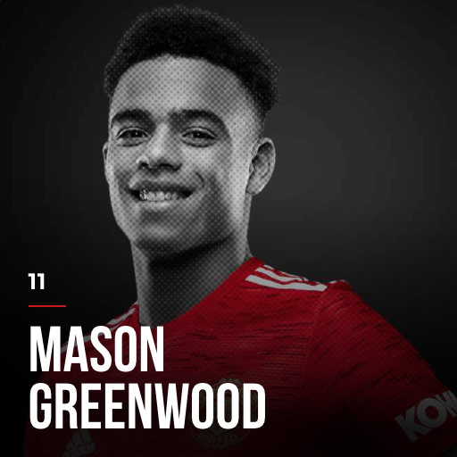
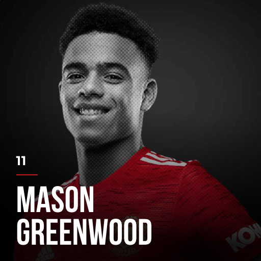

ACADEMY GOALKEEPERS

Dean Henderson is believed to be the future of Manchester United in the goalkeeper position.
ACADEMY DEFENDERS


Brandon Williams is currently on loan for Norwich F.C. in the English Premier League.
Axel Tuanzebe was believed to be a future star of Manchester United; however, he has been prone to injuries for the past year.
Teden Mengi is believed to be the future of the team as well. He is currently on loan for Derby County F.C. in English League 1.
ACADEMY MIDFIELDERS


James Garner is currently on loan for Nottingham Forest F.C. in English League 1. He is famous for accurate long-ball pass.
Scott McTominay is famous for his aggressive play style, for which supporters give him the name "Mad Dog".
Hannibal is believed to be the next best future midfielder of Manchester United with accurate long-ball pass and critical short-pass
skills for goal opportunity.
ACADEMY FOWARDS
 



Marcus Rashford, a future monument at the club, is famous for being both a great player in the field and a great heart for the
community. He has raised 1 million GBP to bring food to children during the pandemic.
Mason Greenwood is one of the top scorers for the league as a teenager. He is two-footed and his shooting skill is really efficient.
Elanga, Chong and Shoretire are called for Team 1 for their potentials, but still need time to prove.